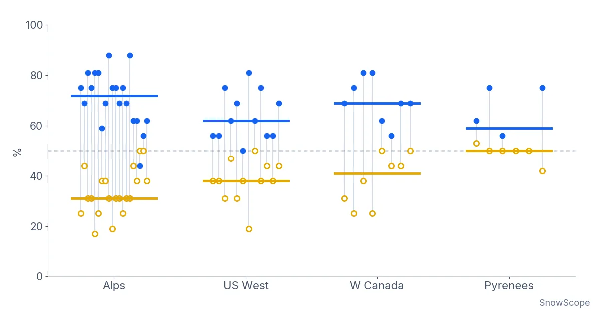

Schnee in Andorra (17. November 2026): Schneehöhen, Neuschnee und Skigebiete
In Andorra sind heute rund 10 km² Bergland weiß, kaum anders als gestern. Das sind 2 % des kartierten Berglands in Andorra.
Die Live-Schneeprognose für Ordino-Arcalis in der SnowScope-AppSchneehöhen, Pulverschnee-Alarme und 3D-Karte, gratis.
Die Schneedecke heute
Über die Woche hat sich die weiße Fläche gegenüber 40 km² kaum verändert. Noch ist keine Höhenstufe überwiegend weiß.
| Skigebiet | Schneehöhe | Neuschnee, 72 h | Erwartet, nächste Tage | Gipfel |
|---|---|---|---|---|
| Ordino-Arcalis | 3 cm | 2 cm | 8 cm | 2.626 m |
| Pal-Arinsal | 3 cm | 1 cm | 4 cm | 2.494 m |
Wie tief, Höhenstufe für Höhenstufe
Je höher, desto mehr Schnee: zwischen 2.000 und 2.500 m im Schnitt unter 1 cm, 1 % bedeckt; über 2.500 m: im Mittel unter 1 cm (9 % weiß).
Skibedingungen
Am Boden hat sich wenig verändert: Der Schnee von heute ist meist der vom letzten Tief.
Wo der Neuschnee fiel
Die letzten drei Tage waren trocken oder fast, nirgends mehr als 1 cm.
Was kommt
Die kommende Woche könnte bis zu 7 cm bringen, davon 6 cm in den nächsten drei Tagen.
Der schneereichste Tag dürfte der Donnerstag, 19. November werden, mit bis zu 5 cm an den schneereichsten Stellen.
Weiter voraus zeigen die Tage 8 bis 14 bis zu 21 cm an den schneereichsten Hängen.
Die Auswahl fürs Wochenende
Ordino-Arcalis liegt vorn mit 3 cm im oberen Bereich.
Knapp dahinter: Pal-Arinsal (3 cm).
Ordino-Arcalis bekam in drei Tagen 2 cm und könnte bis Freitag, 20. November weitere 8 cm dazubekommen.
In Pal-Arinsal: 1 cm Neuschnee in drei Tagen, bis Freitag, 20. November werden 4 cm mehr erwartet.
Heute sind 2 von 4 Skigebieten in Andorra weiß.
Tipps für Skifahrer
- Vor dem Gelände abseits der Piste den lokalen Lawinenbericht lesen.
- Neuschnee auf kalter Unterlage hält schlecht: an steilen Hängen vorsichtig sein.
- Früher Schnee ist über Steinen dünn: zuerst auf präparierten Pisten bleiben.
Zu diesen Zahlen
Die Schneehöhen der Skigebiete sind der meiste Schnee in den oberen Hängen laut SnowScope-Schneemodell (etwa 1 km, Lauf vom 17. November); es sind Schätzungen für eine Fläche, keine Messung an einem Punkt. Werte von Messstationen sind Messungen am angegebenen Tag. Prognosen können sich ändern. Lies vor dem Freeriden immer den offiziellen Lawinenlagebericht.
Diesen Bericht zitieren
Für Forschung, Lehre oder Presse: Zahlen und Grafiken sind unter CC BY 4.0 mit dieser Quellenangabe frei nutzbar.
SnowScope (2026), Schnee in Andorra (17. November 2026): Schneehöhen, Neuschnee und Skigebiete, https://snowscope.app/blog/de/2026/11/andorra-snow-report-17-november-2026.html, abgerufen am 2026-11-17
SnowScope (Atlas Labs). (2026, November 17). Schnee in Andorra (17. November 2026): Schneehöhen, Neuschnee und Skigebiete. SnowScope snow reports. https://snowscope.app/blog/de/2026/11/andorra-snow-report-17-november-2026.html
BibTeX
@misc{snowscope2026andorrasnowreport17novem,
author = {{SnowScope (Atlas Labs)}},
title = {Schnee in Andorra (17. November 2026): Schneehöhen, Neuschnee und Skigebiete},
year = {2026},
month = nov,
howpublished = {\url{https://snowscope.app/blog/de/2026/11/andorra-snow-report-17-november-2026.html}},
note = {Published 2026-11-17 12:46 UTC; accessed 2026-11-17}
}· CC BY 4.0 · Methoden, Daten und Werkzeuge →
Ordino-Arcalis: Schnee und Temperatur nach Höhe, dieser Winter vs letzter (Werkzeuge) →
Ordino-Arcalis folgen
Gratis: eine Nachricht, wenn Neuschnee kommt, und jeden Morgen die Vorhersage.
Weitere Schneeberichte

Verglichen wurde der Schnee am 10. November mit der größten Schneehöhe jedes Winters, in 46 Skigebieten über 46 Winter. Ein schneereicher Start hilft, aber weniger, als viele Skifahrer denken.

Ein Bild, 100 Gebirge in den Alpen, den Pyrenäen, im Atlas und in Nordamerika: Kanada führt mit 89 % Schneebedeckung, die Alpen erreichen 45 %, der Atlas und der Nordosten der USA sind noch aper.